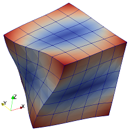

Vibration of a cube of nearly incompressible material: alternative models
Description
Compute the free-vibration spectrum of a unit cube of nearly incompressible isotropic material, E = 1, ν = 0.499, and ρ = 1 (refer to [1]).
The solution with the serendipity quadratic hexahedron is supplemented with solutions obtained with advanced finite elements: nodal-integration energy stabilized hexahedra and tetrahedra, and mean-strain hexahedra and tetrahedra.
References
[1] Puso MA, Solberg J (2006) A stabilized nodally integrated tetrahedral. International Journal for Numerical Methods in Engineering 67: 841-867. [2] P. Krysl, Mean-strain 8-node hexahedron with optimized energy-sampling stabilization, Finite Elements in Analysis and Design 108 (2016) 41–53.

Goals
- Set up a simulation loop that will run all the models and collect data.
- Present the computed spectrum curves.
#Definitions
This is the finite element toolkit itself.
using FinEtoolsThe linear stress analysis application is implemented in this package.
using FinEtoolsDeforLinearConvenience import.
using FinEtools.MeshExportModuleThe eigenvalue problem is solved with the Lanczos algorithm from this package.
using Arpack
using SymRCMThe material properties and dimensions are defined with physical units.
E = 1*phun("PA");
nu = 0.499;
rho = 1*phun("KG/M^3");
a = 1*phun("M"); # length of the side of the cube
N = 8
neigvs = 20 # how many eigenvalues
OmegaShift = (0.01*2*pi)^2; # The frequency with which to shiftThe model is fully three-dimensional, and hence the material model and the FEMM created below need to refer to an appropriate model-reduction scheme.
MR = DeforModelRed3D
material = MatDeforElastIso(MR, rho, E, nu, 0.0);models = [
("H20", H20block, GaussRule(3,2), FEMMDeforLinear, 1),
("ESNICEH8", H8block, NodalTensorProductRule(3), FEMMDeforLinearESNICEH8, 2),
("ESNICET4", T4block, NodalSimplexRule(3), FEMMDeforLinearESNICET4, 2),
("MSH8", H8block, NodalTensorProductRule(3), FEMMDeforLinearMSH8, 2),
("MST10", T10block, TetRule(4), FEMMDeforLinearMST10, 1),
]Run the simulation loop over all the models.
sigdig(n) = round(n * 10000) / 10000
results = let
results = []
for m in models
fens, fes = m[2](a, a, a, m[5]*N, m[5]*N, m[5]*N);
@show count(fens)
geom = NodalField(fens.xyz)
u = NodalField(zeros(size(fens.xyz,1),3))
numbering = let
C = connectionmatrix(FEMMBase(IntegDomain(fes, m[3])), count(fens))
numbering = symrcm(C)
end
numberdofs!(u, numbering);
println("nfreedofs = $(u.nfreedofs)")
femm = m[4](MR, IntegDomain(fes, m[3]), material);
femm = associategeometry!(femm, geom)
K = stiffness(femm, geom, u)
M = mass(femm, geom, u);
evals, evecs, nconv = eigs(K+OmegaShift*M, M; nev=neigvs, which=:SM)
@show nconv == neigvs
evals = evals .- OmegaShift;
fs = real(sqrt.(complex(evals)))/(2*pi)
println("$(m[1]) eigenvalues: $(sigdig.(fs)) [Hz]")
push!(results, (m, fs))
end
results # return it
end
#Present the results graphically
using Gnuplot
@gp "set terminal windows 0 " :-
for r in results
@gp :- collect(1:length(r[2])) vec(r[2]) " lw 2 with lp title '$(r[1][1])' " :-
end
@gp :- "set xlabel 'Mode number [ND]'" :-
@gp :- "set ylabel 'Frequency [Hz]'"This page was generated using Literate.jl.